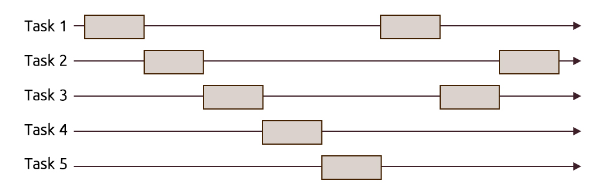

Concurrency in C++ [Prologue]
Posted: June 11, 2013 | More posts about Concurrency
First things first
The purpose of these posts is to explore the newly release thread-aware memory model supported by the new C++11 standard. But before we get our hacking on, we'll need to get some terminology out of our way. These terminology can be divided into a couple of questions that we'll answer in this post
- What is the difference between concurrency and parallelism?
- What are threads? And what is the difference between threads and processes?
What is the difference between concurrency and parallelism?
Parallelism: When we execute several computations in parallel, e.g. multiple tasks are executing code simultaneously (at the same instant) on multi-processor/multi-core/distributed systems with the goal of hopefully running faster than it would on a single processor.

Concurrency: Is a more generalized term than parallelism; where multiple tasks are making progress in a specific interval. Meaning that their executions overlap, but that doesn't necessarily mean that they are executing at the same instant.

A great importance of concurrency is its role in making computer software more usable, example when running software that uses an MDI (Multiple Document Interface) or a TDI (Tabbed Document Interface) like a word processor or a browser on a single-core processor, you get to operate on several documents and interact properly with the GUI without any lagging or sluggishness. Or having a program that connects to a database, retrieves data from it while still being able to handle the user's interactions. This can't be achieved if each task gets to complete all of its work before relinquishing the processor control. One way to achieve this scenarios would require using time-slicing, where the processor's time is divided into slices to be shared between a number of tasks and each task runs until its time is over then an interrupt is made to switch (context switch) to another task, giving the illusion that tasks are running in parallel. This mode of operation can also be referred to as preemptive multitasking. You could also check Rob Pike's demo about the difference between Concurrency and Parallelism (slide 14:30)
Having established the difference between concurrency and parallelism we can now move on to another concept which is threads.
What are threads?
And what is the difference between threads and processes?
Before we answer this question, we'll try to use an analogy that might make things easier to grasp.
A process is like a house
A house is really a container, with certain attributes (such as the amount of floor space, the number of bedrooms, and so on).
If you look at it that way, the house really doesn't actively do anything on its own -- it's a passive object. This is effectively what a process is. We'll explore this shortly.
Threads are like the occupants
The people living in the house are the active objects -- they're the ones using the various rooms, watching TV, cooking, taking showers, and so on. We'll soon see that's how threads behave.
You could be living by yourself (Single-threaded)
If you've ever lived on your own, then you know what this is like -- you know that you can do anything you want in the house at any time, because there's nobody else in the house. If you want to turn on the stereo, use the wash-room, have dinner -- whatever -- you just go ahead and do it.
You can have some company with you (Multi-threaded)
Things change dramatically when you add another person into the house. Let's say you get married, so now you have a spouse living there too. You can't just march into the wash-room at any given point; you need to check first to make sure your spouse isn't in there!
If you have two responsible adults living in a house, generally you can be reasonably lax about "security" -- you know that the other adult will respect your space, won't try to set the kitchen on fire (deliberately!), and so on.
Now, throw a few kids into the mix and suddenly things get a lot more interesting.
Threads represent the smallest sequence of execution in a program that can be managed independently by the OS, meaning that in terms of the time-slicing approach we've referred to earlier, the slice can't be assigned to anything more granular than threads.
Threads hold tasks like loading a document and updating the UI which are interleaved by the scheduler to run concurrently.
After examining the previous analogy we can say that:
- A single instance of a program constitutes a running process which in turn may contain a single main thread or multiple running threads.
- Threads of the same process run in a shared memory space, while each process on the other hand have its own memory space.
Based on this mode of operation, there are some consequences:
- Threads are more easy to instantiate than processes because they don't require the allocation of a new address space like processes.
- Because processes are independent of each other, they require some sort of channel in order to communicate with each other e.g. message passing used in MPI
- Threads on the other hand don't suffer from lack of communication because they share the same memory, consequently synchronization between the threads is required to make sure that one thread won't tamper with a shared resource e.g. a data structure (the wash-room from our analogy) while another thread is operating on it. We'll talk later about the methods for accomplishing synchronization between threads.
When do we divide tasks into threads and when do we spawn several processes to run them is mainly up to the programmer to decide how his software is going to behave. To illustrate, we'll talk about a ubiquitous tool in our present; browsers. A few years ago when we wanted to operate on several tabs on a browser that supported TDI, the application's process spawned a separate child thread for each tab. Around 2008, Chromium started using a different model "multi-process architecture" where separate processes were spawned for managing tabs, web apps and plug-ins.
The reasons behind the approach that was taken in Chromium in putting web apps and plug-ins in separate processes from the browser itself can be found in this post explaining the multi-process architecture, they could be summarised into:
- Prevent having the whole browser crash if one of the tabs become unresponsive (e.g. rendering engine crashes) this won’t affect the browser or other running web apps.
- To take advantage of the modern computer architectures by parallelizing the execution of the rendering engines for each tab along with the rest of web apps and extensions.
- Provide a sandbox for tabs, web apps, etc. to limit the damage if an exploit occurs.
Soon enough, other flagship browsers have started to follow this model including Mozilla's Firefox in a project named Electrolysis.
In the next post, we'll start our journey to explore the concurrency realm in C++11 from managing threads, synchronizing operations between threads and protecting shared data.
Further reading
- William Stalling's - Operating Systems: Internals and Design Principles (Part 2 - Processes)
- On parallelism vs. concurrency